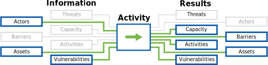

Developed with ❤ by

Information Innovation Lab
Applied research and development of public interest technology.
This component allows the auditor to assess the security of the individual devices on the network. This component consists of interviews, surveys, and inspection of devices.
Compromised devices have the ability to undermine nearly any other organizational attempt at securing information. Knowing if devices receive basic software and security upgrades and what core protections against unauthorized access exist is vital to designing a strategy to make the host more secure.

Guidelines: "Guidelines on Firewalls and Firewall Policy" (NIST 800-41)
Benchmarks: "Security Configuration Benchmarks" (CIS Security Benchmarks)
Repository: "National Checklist Program Repository - Prose security checklists" (National Vulnerability Database)
Security Guidance: "Operating Systems Security Guidance" (NSA)
Guide: "How to Teach Humans to Remember Really Complex Passwords" (Wired)
Guide: "Security on Passwords and User Awareness" (HashTag Security)
Video: "What’s wrong with your pa$$w0rd?" (TED)
Article: "Password Security: Why the horse battery staple is not correct" (Diogo Mónica)
Organization: "Passwords Research" (The CyLab Usable Privacy and Security Laboratory (CUPS))
Applied research and development of public interest technology.